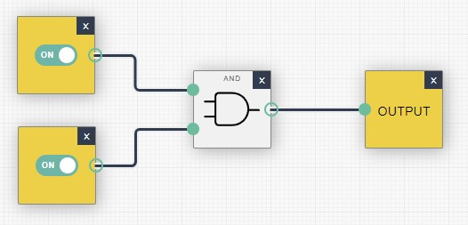

Sitzung - Thema: Einführung in die Boolesche Algebra
Aufgabenstellung
Aufgaben:

Die Schaltung, wenn beide Eingangsvariablen wahr sind. (Quelle: eigene Aufnahme)

Zum Vergleich die Schaltung, wenn nur eine Eingangsvariable wahr ist. (Quelle: eigene Aufnahme)

Wenn beide Eingangsvariablen auf wahr sind, schaltet die Ausgabevariable auf falsch. (Quelle: eigene Aufnahme)

Nur, wenn beide Eingangsvariablen auf falsch sind, schaltet die Ausgabevariable auf wahr. (Quelle: eigene Aufnahme)
Konstruieren Sie eine Schaltung, die die OR-Operation zwischen zwei Variablen demonstriert.

Test der Schaltung:
- Beide Eingangsschalter (A und B) sind aus, d. h. auf 0 gesetzt.
- Der Output des OR-Gatters ist 0, daher leuchtet die Ausgangsvariable nicht.
- Eingangsschalter A ist aus (0) und Eingangsschalter B ist ein (1).
- Der Output des OR-Gatters ist 1, daher leuchtet die Ausgangsvariable.
- Eingangsschalter A ist ein (1) und Eingangsschalter B ist aus (0).
- Der Output des OR-Gatters ist 1, daher leuchtet die Ausgabevariable.
- Beide Eingangsschalter (A und B) sind ein, d. h. auf 1 gesetzt.
- Der Output des OR-Gatters ist 1, daher leuchtet die Ausgangsvariable.

Test der Schaltung:
In der obigen Schaltung, steht Z für den Ausgang der logischen Funktion. Das heißt, das Z das Ergebnis der kombinierten logischen Operationen ist, die auf den Eingabewerten A und B durchgeführt werden.
- AND-Gatter: 𝐴 AND 𝐵 = 0 AND 0 = 0
- NOT-Gatter: NOT(A)=NOT(0)=1
- OR-Gatter: Z=(0 OR 1)=1
- Ergebnis: Output leuchtet, da Z=1
- AND-Gatter: A AND B=0 AND 1=0
- NOT-Gatter: NOT(A)=NOT(0)=1
- OR-Gatter: Z=(0 OR 1)=1
- Ergebnis: Output leuchtet, da Z=1.
- AND-Gatter: A AND B=1 AND 0=0
- NOT-Gatter: NOT(A)=NOT(1)=0
- OR-Gatter: Z=(0 OR 0)=0
- Ergebnis: Output bleibt aus, da Z=0.
- AND-Gatter: A AND B=1 AND 1=1
- NOT-Gatter: NOT(A)=NOT(1)=0
- OR-Gatter: Z=(1 OR 0)=1
- Ergebnis: Output leuchtet, da Z=1.
Erklärung der Funktionsweise:
Die Schaltung verwendet eine Kombination aus AND-, OR- und NOT-Gattern, um die logische Funktion 𝑍=(𝐴 AND 𝐵) OR NOT (𝐴) zu realisieren. Hier ist, was die einzelnen Gatter tun:
Durch das Testen aller möglichen Kombinationen der Eingangswerte A und B konnten wir feststellen, wann der Output leuchtet (wenn der Ausgang Z=1 ist) und wann er nicht leuchtet (wenn Z=0 ist).